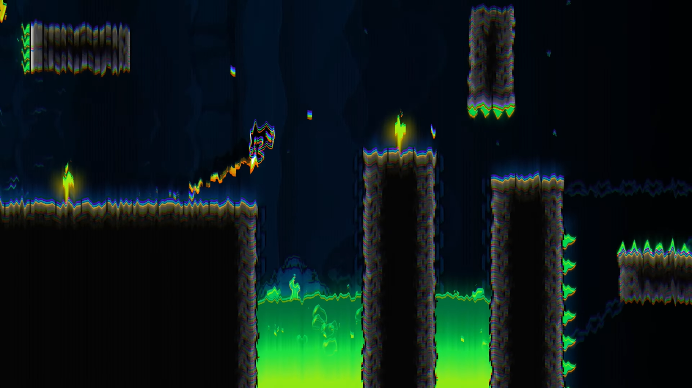
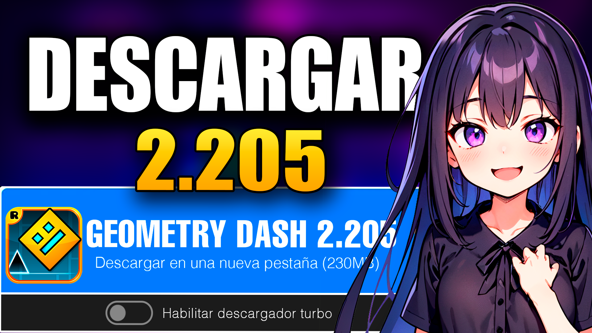

Buscas como DESCARGAR Geometry Dash 2.205 Ultima Version?
Capturas Geometry Dash 2.205
Geometry Dash es un juego de plataformas que combina acción, música y habilidad. El objetivo es simple: guiar a un personaje cuadrado a través de niveles llenos de obstáculos y trampas. La mecánica se sincroniza con la música, lo que añade un toque rítmico y desafiante al juego.
Plataformas de acción basadas en el ritmo: Cada nivel está diseñado para que sigas el compás de la música. Salta, vuela y esquiva obstáculos al ritmo de la banda sonora. Muchos niveles con bandas sonoras únicas: Geometry Dash ofrece una amplia variedad de niveles, cada uno con su propia música y estilo visual. Desde niveles más sencillos hasta desafíos extremadamente difíciles, hay algo para todos. Editor de niveles: ¿Quieres crear tus propios desafíos? Utiliza el editor de niveles para diseñar tus propias creaciones y compartirlas con otros jugadores. Niveles generados por usuarios: Además de los niveles oficiales, Geometry Dash cuenta con miles de niveles creados por la comunidad. Explora y juega niveles de alta calidad creados por otros jugadores. Personalización: Desbloquea nuevos íconos y colores para personalizar tu personaje. ¡Haz que se vea único mientras superas los obstáculos! Habilidades especiales: Vuela en cohetes, invierte la gravedad y mucho más. Cada nivel presenta nuevas mecánicas y desafíos.
Puedes adquirir Geometry Dash de forma legal a través de Steam, una plataforma de distribución digital de videojuegos. El precio actual es de $3.99. Simplemente añade el juego al carrito y sigue las instrucciones para completar la compra
Dos íconos exclusivos para usuarios de Steam: Si juegas en Steam, desbloquearás dos íconos adicionales para personalizar tu personaje. Recuerda que Geometry Dash es un juego desafiante que pondrá a prueba tus habilidades y reflejos. ¡Prepárate para saltar al ritmo de la música y superar los obstáculos más difíciles!
Aqui te dejo los ENLACES de descarga para El GEOMETRY DASH 2.205 por Pizetoo
2.205 ANDROID GD 2.2 WINDOWS PC GD 2.2 MOD HACK ANDROID MSVCP120.DLL© 2024 Pizetoo. Todos los derechos reservados. El contenido de este sitio web está protegido por derechos de autor. Queda prohibida la reproducción, distribución o uso no autorizado de cualquier material sin el consentimiento expreso del propietario.